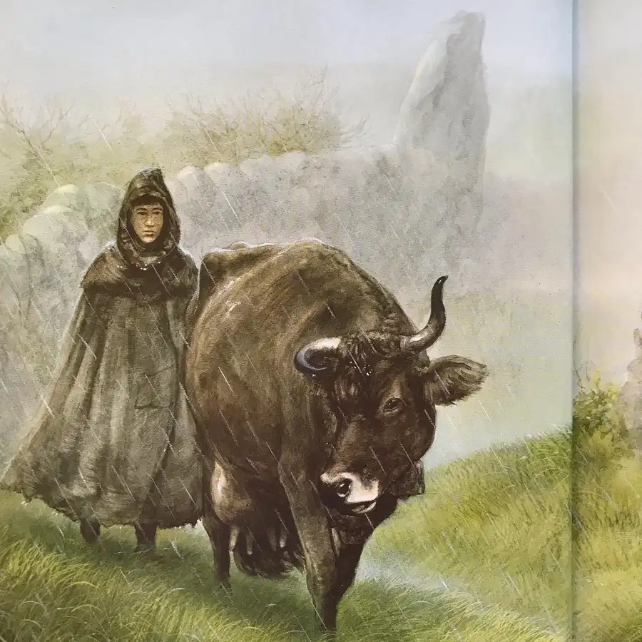
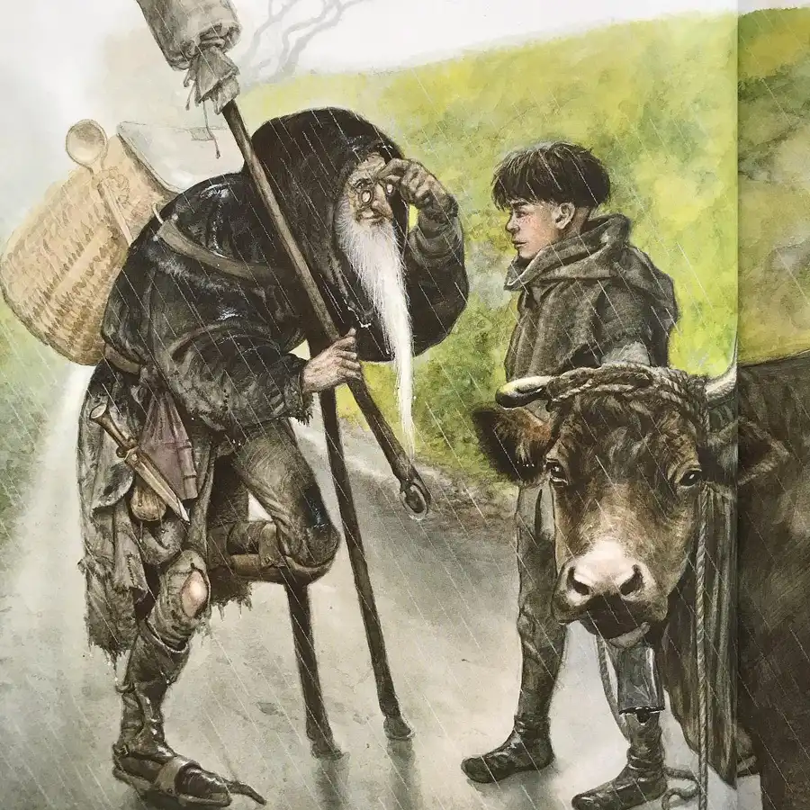
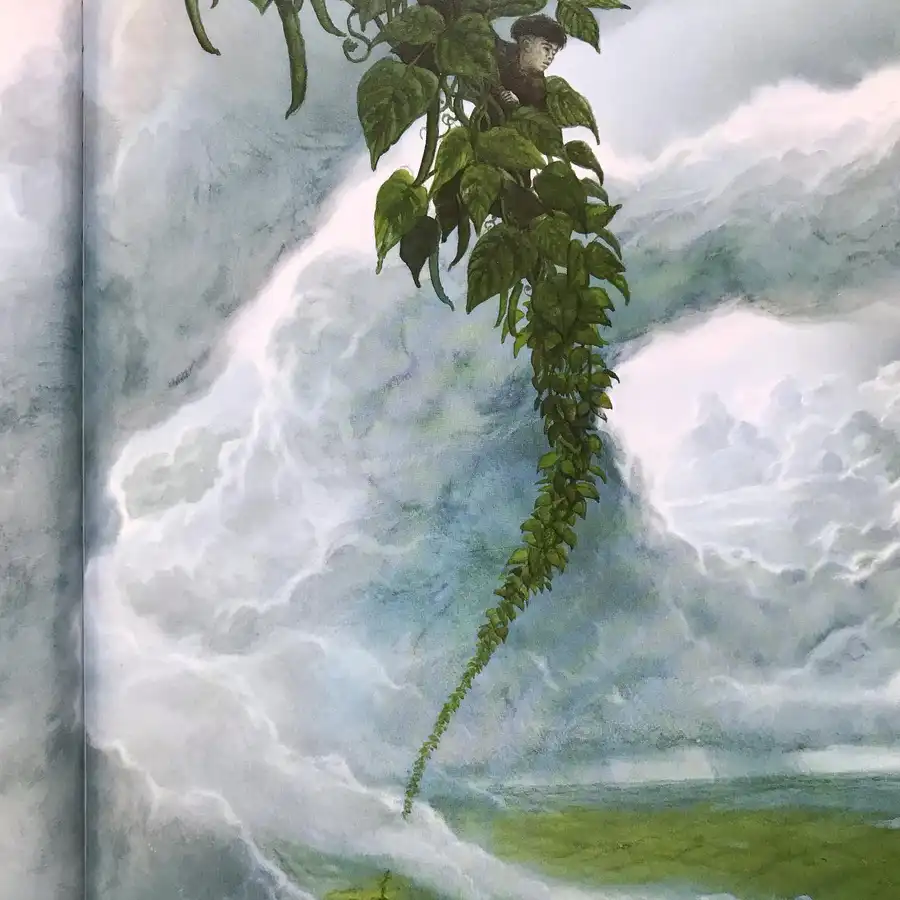
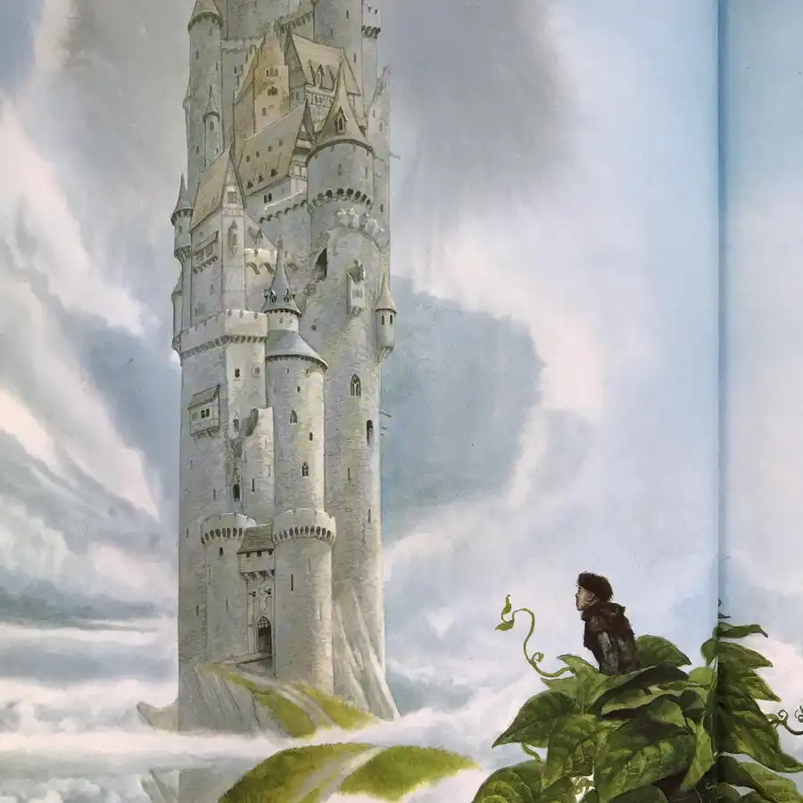
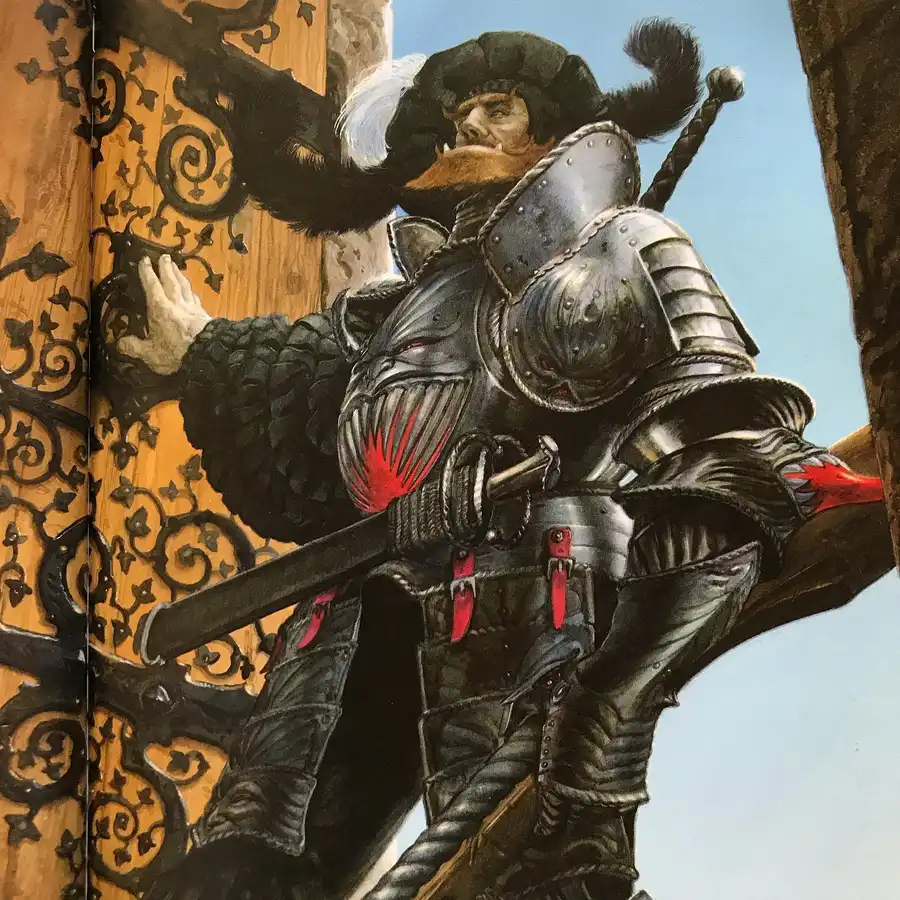
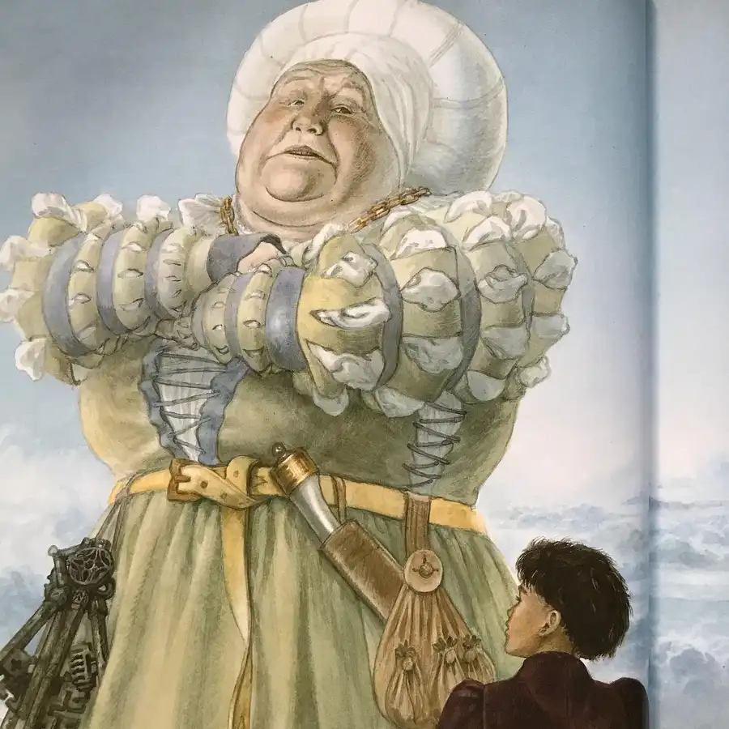
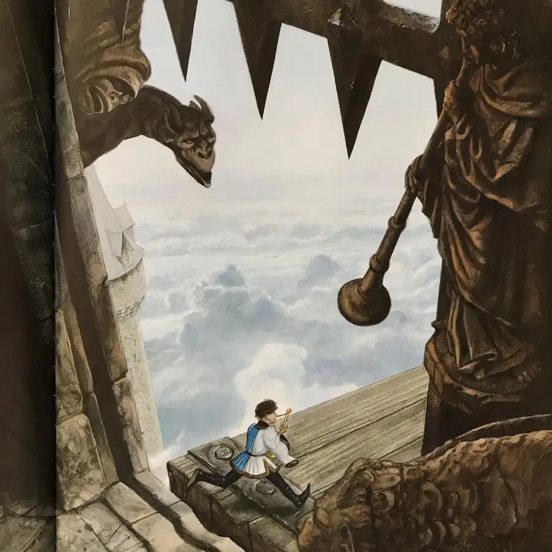
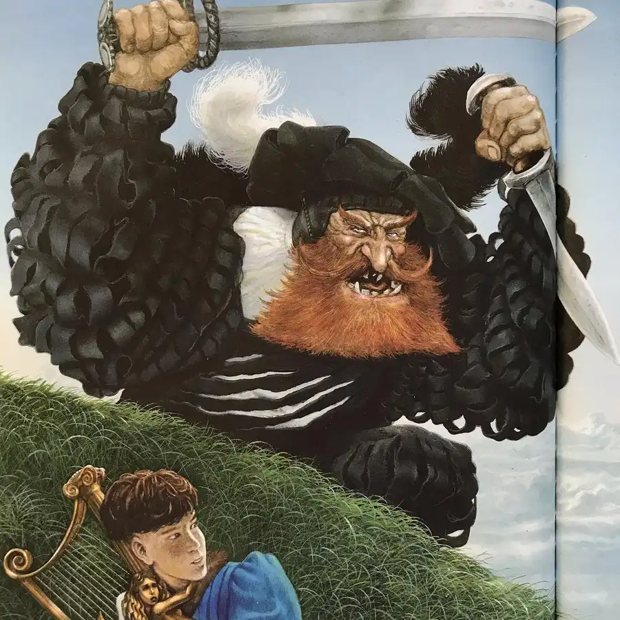
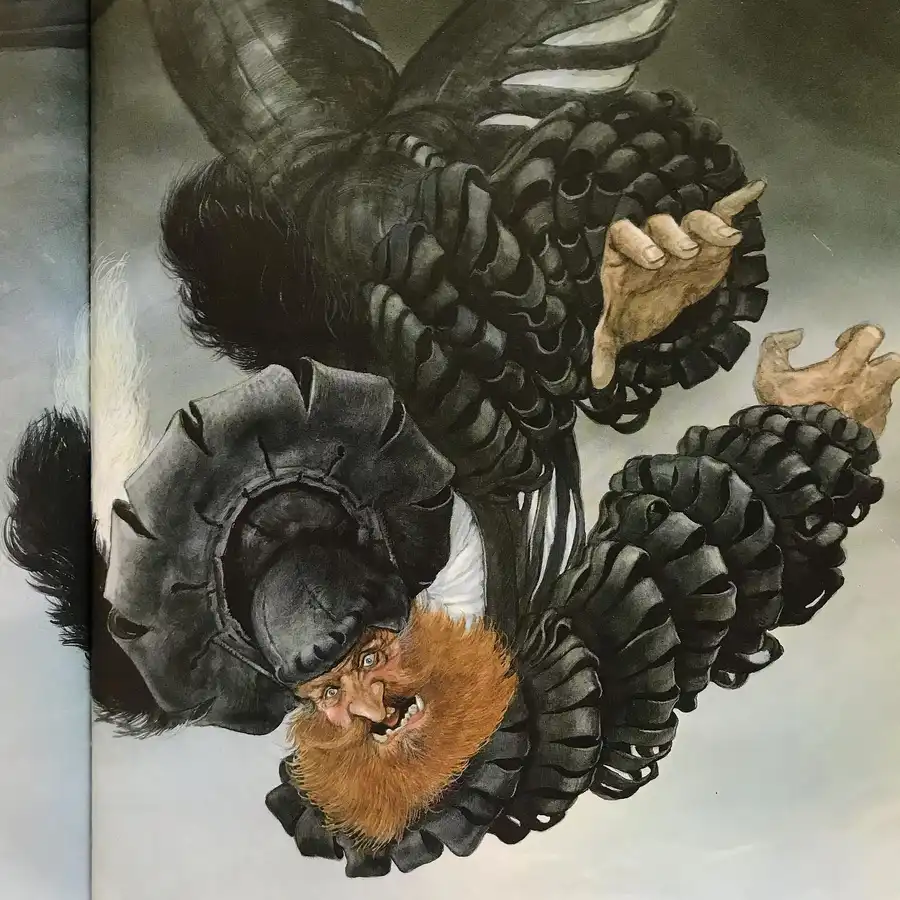

Jack and the Beanstalk Week draws to a close, but not without this marvelous retelling by John Howe. The engaging prose and lush paintings create a gripping world of high fantasy adventure. Fashion, architecture, and other visual elements set the tale in the Middle Ages. The giant’s castle, many times taller than its width, juts preternaturally upward like a white spear. Curiously, Jack and his mother occupy a bleak landscape afflicted with an apparently ceaseless thunderstorm; only when Jack rises above the earth and penetrates the cloud bank does he stand under a clear sky. Finally, with the death of the giant at story’s end, the storm lifts, as if a supernatural curse has been undone and wiped away. #jack #beanstalk #jackandthebeanstalk #giant #book #books #childrensbooks #beautifulbook #beautifulbooks #beautifulbookcover #beautifulbookcovers #picturebook #picturebooks #picturebookillustration #picturebookillustrations #picturebookart #childrensbookillustration #childrensliterature #illustration #kidlit #kidsbooks #bookworm #booklover #booklovers #bibliophile #bookstagram #bookstagrammer #bookstagrammers #instabook #instabooks









